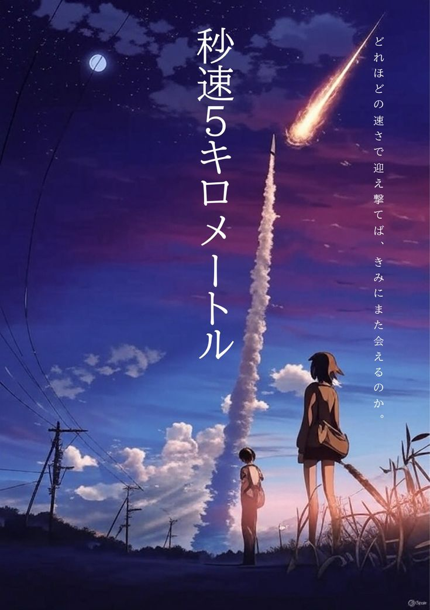
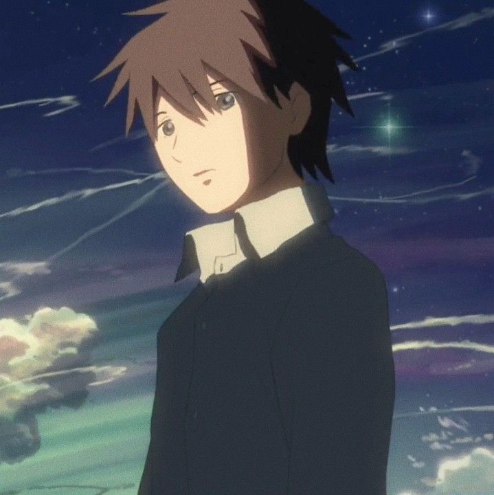
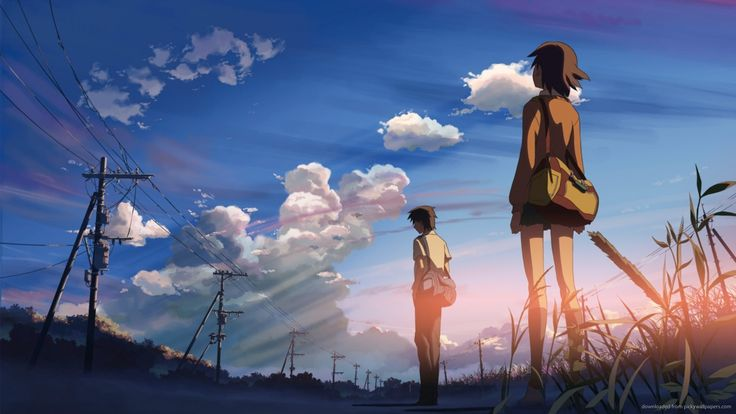
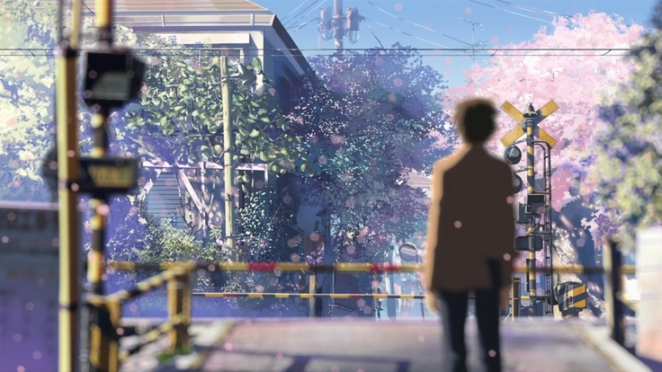

✦
Anime Cinema Universe
✦

Byousoku 5 Centimeter
🎬 Sutradara: Makoto Shinkai
📅 Tahun: 2007
⏱️ Durasi: 63 menit
🎵 Musik: Tenmon
🏆 Rating: ★★★★★ 8.1/10
📊 Box Office: ¥1.0 miliar
🎞️ Studio: CoMix Wave Films
📍 Lokasi: Tokyo, Tanegashima
5 Centimeters Per Second adalah film trilogi yang dibagi menjadi tiga bagian: "Cherry Blossom", "Cosmonaut", dan "5 Centimeters Per Second".
Episode 1: Cherry Blossom
Mengisahkan Takaki Toono dan Akari Shinohara, dua sahabat kecil yang sangat dekat. Mereka menghabiskan waktu bersama, berbagi buku, dan menikmati keindahan bunga sakura yang jatuh dengan kecepatan 5 cm per detik. Namun, Akari harus pindah ke Tochigi karena pekerjaan orang tuanya, memisahkan mereka.
Episode 2: Cosmonaut
Bertahun kemudian, Takaki sekarang menjadi siswa SMA di Tanegashima. Kakeru, seorang gadis yang menyukainya, berusaha mendekati Takaki yang selalu melamun dan menatap jauh ke angkasa. Dia menyadari bahwa hati Takaki masih terpaut pada seseorang di masa lalu.
Episode 3: 5 Centimeters Per Second
Takaki kini bekerja di Tokyo sebagai programmer. Hidupnya terasa hampa dan monoton. Suatu hari, dia menyadari bahwa meskipun waktu terus berlalu, perasaannya terhadap Akari tidak pernah benar-benar hilang. Film berakhir dengan scene ikonik di perlintasan kereta api, di mana mereka hampir bertemu lagi setelah bertahun-tahun terpisah.
Film ini menggambarkan dengan indah tentang jarak, waktu, dan bagaimana manusia berubah seiring berjalannya kehidupan.
"Kita mungkin pernah saling mencintai. Tapi pada akhirnya kita tidak bisa bersama. Bukan karena salah satu dari kita berubah. Tapi karena kita berdua tumbuh menjadi orang yang berbeda."
- Takaki Toono, 5 Centimeters Per Second

(遠野 貴樹)
13 → 27 tahun
Protagonis utama yang tumbuh dari anak laki-laki pemalu menjadi pria dewasa yang terasing. Sejak kecil dia memiliki hubungan khusus dengan Akari. Meski waktu dan jarak memisahkan mereka, Takaki tidak pernah bisa melupakan perasaannya. Dia hidup dengan rasa kerinduan yang dalam dan kesulitan bergerak maju dari masa lalu.
(篠原 明里)
13 → 27 tahun
Sahabat masa kecil Takaki yang harus pindah karena pekerjaan orang tuanya. Dia lembut, penyayang, dan memiliki ikatan emosional yang kuat dengan Takaki. Meski berpisah, dia terus menulis surat untuk Takaki. Seiring waktu, Akari belajar menerima realitas dan melanjutkan hidupnya, meski kenangan tentang Takaki tetap tersimpan di hatinya.

(澄田 花苗)
17 tahun
Siswa SMA di Tanegashima yang menyukai Takaki. Dia berusaha mendekati Takaki dengan berbagai cara, termasuk belajar berselancar karena tahu Takaki menyukainya. Kanae mewakili cinta yang tidak terbalas dan realitas bahwa tidak semua perasaan mendapatkan respons yang sama. Dia akhirnya menyadari bahwa hati Takaki sudah milik orang lain dan belajar untuk melepaskan.

